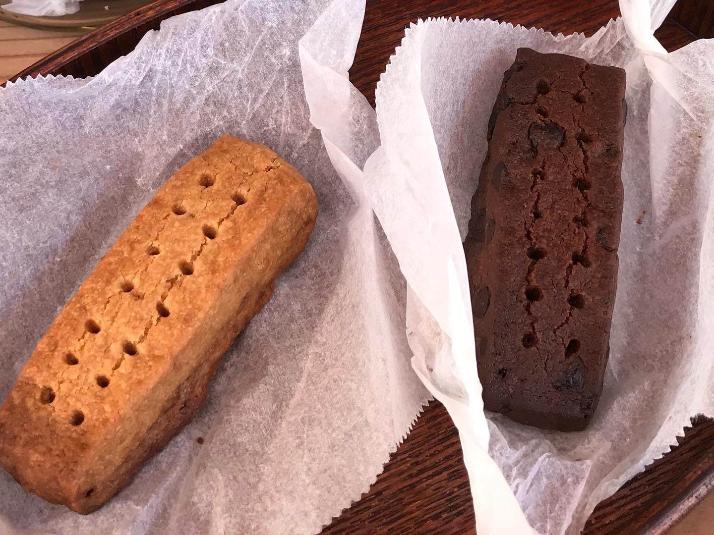

ショートブレッド

・ショートブレッド プレーン 150円
・ショートブレッド ココア 160円
「石窯パン・和みカフェ ゆるり」製造の無添加生地を使用したサクサクのクッキー。
コーヒーとの相性抜群、単体で食べてももちろん美味しい焼き菓子です。
コーヒーカラメルプリン

・コーヒーカラメルプリン 180円(持ち帰り不可)
卵・牛乳・砂糖のみを使用したシンプルなプリンに
ドリップコーヒー入り「コーヒーカラメル」をかけた当店の定番スイーツ。
子供でも食べやすい優しい味わいながら、ほのかにコーヒーが香るプリンです。